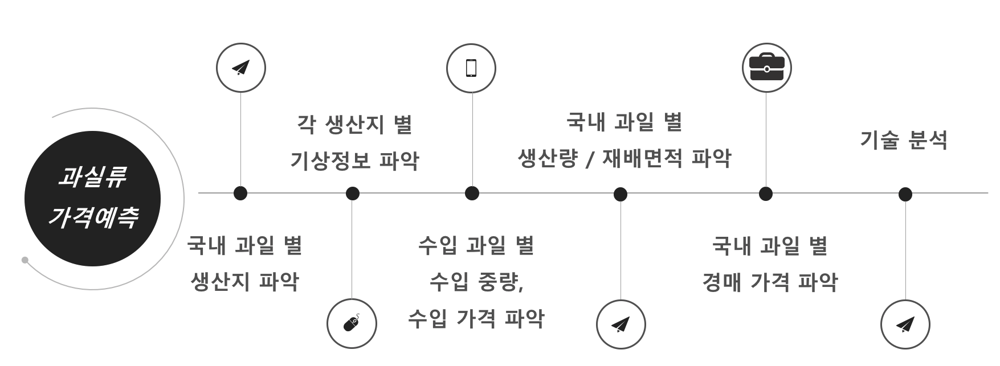
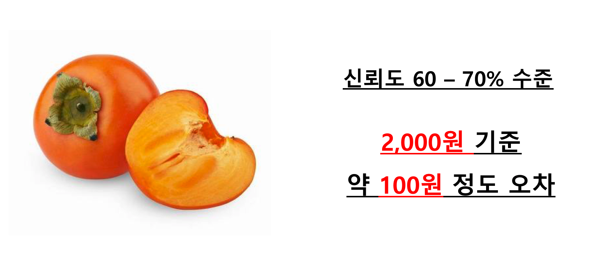

류의 가격은
 
2015년 기준 국내 과실 시장 규모 약 1.5조원 규모로 매년 국내 과실 시장 규모는 크게 증가하고 있다.
국내 과실 시장에서 과실류의 가격은 과실의 생산 현황, 수요 공급 예측 시스템, 수입 과일에 의해 결정 된다.
최근 국내 과실 시장에서의 수입 과일의 점유율은 2016년 기준 약 30% 육박하며 점차 수입 과일의 종류도 다변화하며 점차 점유율이 늘어나고 있다.
하지만, 이렇게 국내 과실 시장의 규모가 커지고 다변화함에도 불구하고 농축산물에 대한 정확한 데이터 인프라가 구축되어있지 않아
주먹구구식의 관측으로 과실 수급면적을 결정하거나 대략적인 과실 재배량을 가지고 수입과일의 수입량을 결정하고 있는 실정이다.
농축산물 관측 정보는 연구원들이 직접 현지에 나가 조사를 벌여 전년과 평년대비 분석을 통해 수급 면적과 양이 결정되며
이러한 주먹구구식의 과실 수급면적의 결정은 국내 과실 농가의 추측성 재배를 유도하여 국내 과일 농가의 생산 소득 감소로 이어지고 있다.
또한, 부정확한 수요 공급 예측 시스템으로 인해 과일을 수입하는 수입사에서도 지속적으로 문제를 야기하고 있는 실정이다.
따라서, 본 프로젝트를 통해 국내 과일 시장 가격형성에 대한 분석인프라와 데이터의 부재를 해결하고 나아가 과실류 가격을 예측해보고자 한다.